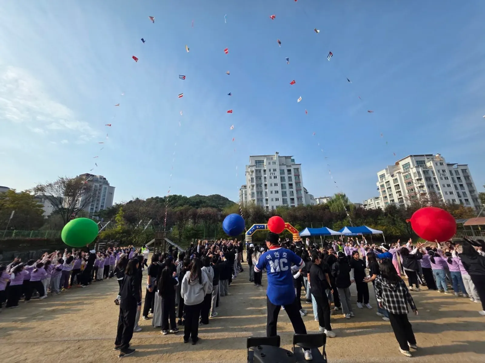

행사 준비 · 2026년 11월 13일
행사 개선 설문 만들기: 질문·응답 선택지·후속 조치
행사 개선 설문 만들기는 좋은 평가를 모으는 일이 아니라 다음 준비에서 바꿀 수 있는 항목을 찾는 일입니다. 질문마다 어떤 결정을 돕는지 정하고 경험하지 않음과 응답하지 않음을 구분하면 답변을 억지로 끌어내거나 긍정 응답을 과장하지 않고도 개선 과제를 정리할 수 있습니다.

- 질문 하나에는 한 가지 경험만 묻습니다.
- 경험하지 않은 항목에 점수를 요구하지 않습니다.
- 응답 요약과 다음 조치의 담당·확인 상태를 연결합니다.

1. 행사 개선 설문 만들기는 바꿀 결정을 정합니다
질문을 쓰기 전에 다음 행사에서 검토할 일을 적습니다. 안내가 이해됐는지, 참여 방식을 고를 수 있었는지, 프로그램 사이 이동을 알기 쉬웠는지처럼 운영 항목을 나눕니다.
결정에 쓰지 않을 질문은 먼저 덜어 냅니다. 단지 궁금하다는 이유로 개인 배경이나 행사와 관련 없는 정보를 묻지 않고 질문의 쓰임을 담당자가 설명할 수 있게 합니다.
이 글의 설문은 주최 측이 참고할 운영 제안입니다. 특정 설문 방식이 응답을 더 많이 모을 수 있다고 단정하거나 모든 행사에 맞는 표준으로 소개하지 않습니다.
2. 질문은 서로 다른 경험을 한 문장에 묶지 않습니다
안내와 프로그램이 모두 좋았는지 한 번에 물으면 어느 부분을 바꿔야 하는지 알기 어렵습니다. 한 질문에는 한 가지 경험을 담고 낯선 내부 용어를 줄입니다.
좋았다는 대답을 유도하는 칭찬 문구를 앞에 붙이지 않습니다. 만족을 전제로 이유를 묻기보다 경험한 내용을 선택하거나 필요한 의견을 남기도록 질문을 씁니다.
| 검토할 경험 | 질문 예시 | 후속 검토 대상 |
|---|---|---|
| 사전 안내 | 참가 전에 필요한 정보를 찾기 쉬웠나요? | 공지 위치와 내용 |
| 현장 이동 | 다음 장소를 확인하기 쉬웠나요? | 표지와 구역 이름 |
| 프로그램 설명 | 참여 방법 설명을 이해할 수 있었나요? | 설명 순서와 확인 방식 |
| 개선 의견 | 다음에 바뀌면 좋을 점이 있나요? | 주최 측 검토 과제 |
위 문구는 초안 예시입니다. 실제 운영하지 않은 프로그램이나 안내를 경험했다고 전제하지 않도록 행사 구성과 맞춰 질문을 골라 씁니다.

3. 선택지는 응답할 수 없는 경우까지 구분합니다
어떤 프로그램에 참여하지 않은 사람은 그 경험에 점수를 매길 수 없습니다. 경험하지 않음, 기억나지 않음, 답변을 원하지 않음이 필요하다면 구분해 선택할 수 있도록 설계합니다.
경험하지 않은 항목을 보통 점수로 채우지 않습니다. 숫자 점수와 비경험 응답을 섞으면 결과의 뜻이 달라지므로 집계할 때도 별도 항목으로 남깁니다.
응답 제출을 경품이나 행사 참여의 당연한 조건처럼 안내하지 않습니다. 별도 운영 조건이 있다면 주최 측이 확인한 범위에서 설명하고 질문을 강제로 채우게 하지 않습니다.
필수 질문을 정할 때는 답하지 않으면 실제로 검토가 불가능한지 다시 봅니다. 조사 편의를 위해 불필요한 사적 정보를 요구하지 않도록 담당자가 항목을 검토합니다.
4. 자유 의견은 평가 대상과 공개 범위를 나눕니다
자유 의견란에는 프로그램이나 안내에서 바꿀 점을 적도록 안내할 수 있습니다. 특정 참가자의 이름을 쓰거나 누가 소극적이었는지 평가하도록 유도하지 않습니다.
개선 대상은 사람이 아니라 운영 방식입니다. 직원이나 참가자의 태도를 공개적으로 순위 매기는 표로 바꾸지 않고 확인 가능한 준비 항목을 찾습니다.
개인 연락처가 필요한 후속 문의는 일반 의견과 별도 경로로 나누는 방법을 검토합니다. 이름을 받지 않았다는 이유만으로 모든 응답이 완전히 익명이라고 단정하지 않습니다.

사진은 객석과 참여 장면을 보여 주는 참고 자료입니다. 표정이나 동작에서 설문 참여 여부나 고객 평가를 추정하지 않습니다.
5. 응답 요약은 해석의 범위를 함께 남깁니다
설문에 답한 사람의 의견을 전체 참가자의 평가라고 바로 바꾸지 않습니다. 누가 응답할 수 있었는지와 응답하지 않은 경우를 알 수 있는 범위에서 구분합니다.
선택형 응답과 자유 의견의 수를 같은 의미로 더하지 않습니다. 한 사람이 여러 개선 의견을 남길 수 있으므로 응답 수와 의견 항목 수를 별도로 적습니다.
요약에는 근거와 다음 조치를 함께 씁니다. 안내 위치를 찾기 어려웠다는 의견이라면 어떤 구역을 점검할지, 누가 확인할지, 아직 남은 질문은 무엇인지 연결합니다.
한 번의 의견만으로 담당자의 잘못을 결론내리지 않습니다. 운영 기록과 현장 조건을 확인한 뒤 바꿀 항목, 유지할 항목, 추가 확인할 항목을 주최 측이 정리합니다.
6. 진행 상담에는 개선 과제만 추려 전달합니다
힐링엔터테인먼트는 전문 MC 진행, 기업 체육대회 · 워크숍 · 팀빌딩, 참여형 게임 · 대동놀이를 안내합니다. 설문 도구 제공이나 응답 분석 대행이 기본 포함이라고 해석하지 않습니다.
견적 문의에 개인별 원문 전체 대신 다음 진행에 필요한 개선 과제를 정리해 보냅니다. 자동 견적서로 진행 항목을 확인하고 설문 관련 추가 업무가 필요하다면 제공 가능 여부와 범위를 따로 질문합니다.
참여 방식 자체의 설계는 워크숍 참여 선택권을 참고합니다. 이 글의 결과물은 역할 배정안이 아니라 질문표와 후속 조치표이며 고객 반응나 성과 수치를 만들어 내는 자료가 아닙니다.
자주 묻는 질문
행사 전체 평가 점수 하나만 물으면 안 되나요?
전체 인상을 참고할 수는 있지만 구체적인 개선 대상을 찾기 어렵습니다. 다음 준비에서 바꿀 수 있는 경험을 나눠 질문합니다.
참여하지 않은 프로그램에도 점수를 받아야 하나요?
경험하지 않음을 선택할 수 있게 하고 점수와 구분해 집계합니다. 비경험 응답을 중간 점수로 임의 변환하지 않습니다.
의견을 홈페이지 홍보문으로 바로 써도 되나요?
운영 개선용 의견을 공개 홍보문와 동일하게 취급하지 않습니다. 공개 여부와 사용할 범위를 주최 측 절차에 따라 별도로 확인해야 합니다.
행사 날짜가 정해지셨나요?
날짜 · 지역 · 인원 · 행사 종류만 알려 주시면 행사에 맞춰 상담 · 견적을 안내드립니다. 행사 중엔 통화가 어려우니 문자 · 카톡을 남겨 주세요.